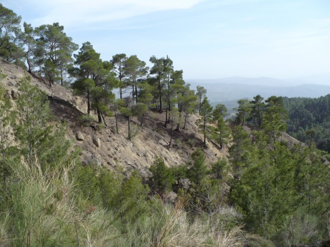
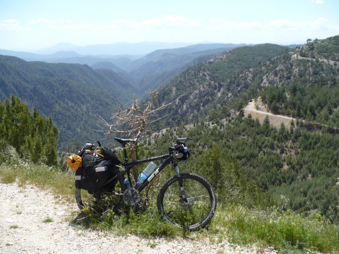
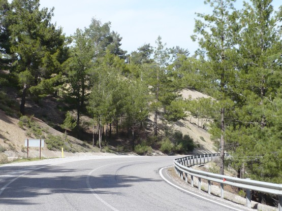
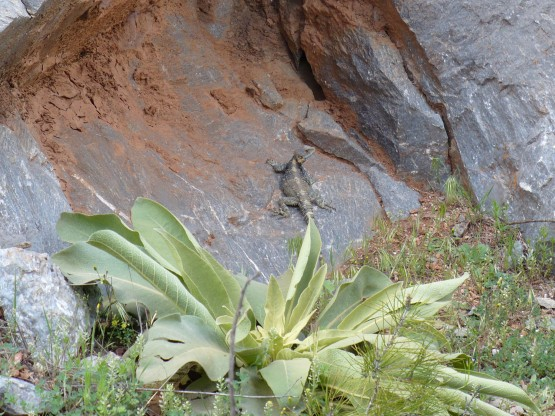
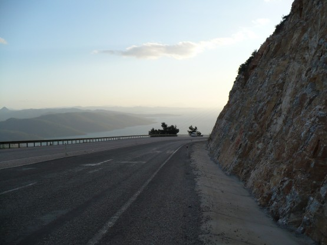
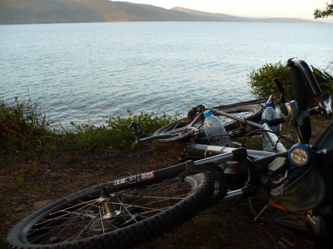

16 апреля
Пожалуй, самый красивый горный участок, 2 перевала по 1000 метров каждый. На спусках только успевал крутить головой, чтобы не пропустить красивейшие виды.
Горы вокруг очень сухие, ручейков нет. В редких местах где есть вода заботливо оборудованы специальные краники и трубы а на плите рядом обязательно написано кто и в каком году сделал это доброе дело. Приятно.
Вид тех мест:

Мой верный конь:

Отдельно хочется сказать про горные дороги. Конечно они хуже чем финские, но средняя скорость спуска с перевала редко опускалась ниже 40 км и не потому, что я такой любитель быстрой езды, просто ям на асфальте практически нет. Единственно, что заставляло сбросить скорость так это ветер и особенно боковой. На одном из спусков (даже не заметил на каком) разогнался до 73 км/ч, но это уже был явно перебор.
Большая часть асфальта мало похожа на наш асфальт - это масса камней прикатанных и политых битумом. При езде по ним моя злая резина издавала громкое урчание. Как только выезжал на участок гладкого асфальта, скорость сразу возрастала на 3-4 км в час. И не смотря на это, горные дороги мне понравились, особенно если учесть малый трафик по ним.
Вот такие вот дороги.

Живность:

Вечером доехал до Муглы. Пришлось подождать пока проедет этап какой-то шоссейной велогонки. Была мысль возглавить ее, чтобы время не терять. . . да скорости у них конечно. . .
Наконец проехал последний запыхавшийся велосипедист, парочка подъемов и спусков и вот он долгожданный вид на море.
Вот оно море, уже рядом:

Заключительный спуск. Место для стоянки найдено буквально в паре километров от Гекова, прямо на берегу моря. Красотища.
Теплый вечер, плеск волн:
